Paybill 400200
Account number 1104672 (both are required to pay)
Recipient: Parenting with Purpose
Pledges open · walk dates to be confirmed
One Rotarian is preparing to walk about 1,100 km from Nairobi to Kagando. Every step you sponsor helps build better places to learn.
From 5 steps · UGX 25,000 · Pledge now, pay later. No money is taken on this page.

01Your part
Your pledge
Pick a country, then your steps. You can change both on the next page.
Loading country prices…
Pledge only · no payment taken.
Your country sets the pledge currency. No payment is taken.
For pledge or contribution help, contact Rtn. CP Joshua Ainabyona.
WhatsApp +256 772 150 281Call +256 772 150 281pci.uganda@gmail.com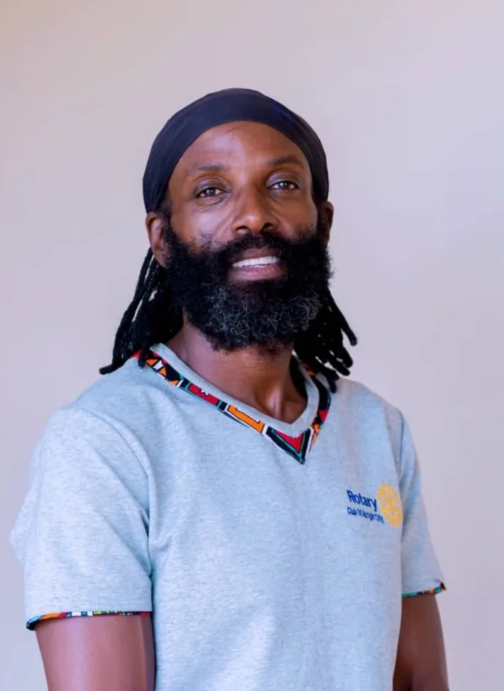
02The Walking Rotarian
Rotarian Shyaka Mbanda is preparing to walk from Nairobi to Kagando, a journey of about 1,100 km. His walk gathers a community around one purpose: better places to learn.
The campaign is convened by Pamodzi Community Initiative, with the Diocese of South Rwenzori as institutional partner, and coordinated by Rtn. CP Joshua Ainabyona.
 Diocese of South RwenzoriInstitutional partner
Diocese of South RwenzoriInstitutional partner
03The backpack
Everyone who pledges carries part of what it stands for.
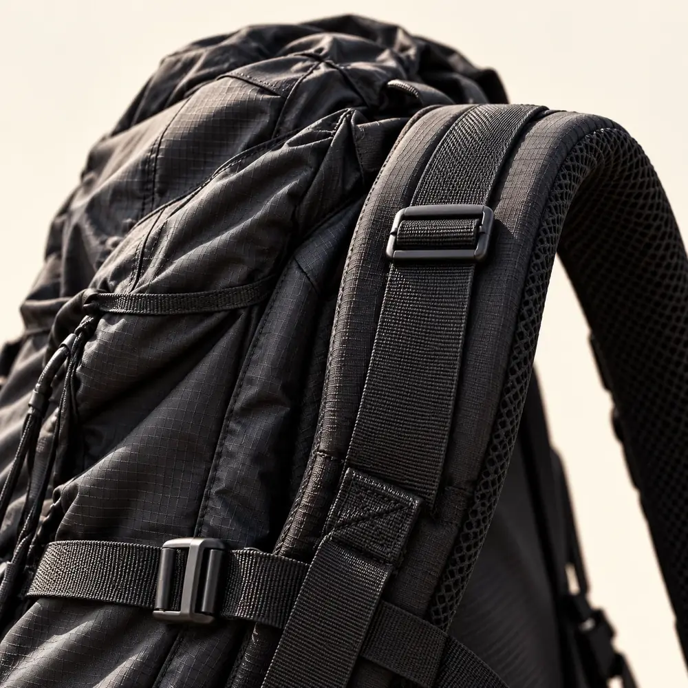

Campaign illustrations
04From first classroom to university
Kagando Nursery & Primary School
A stronger beginning, close to home. The campaign supports the school’s rehabilitation and development.
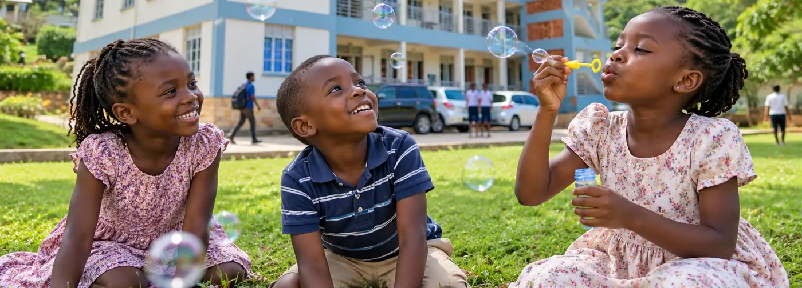
UCU–Kagando University College
Room for more students to live, learn and build skills. Accommodation, lecture space, library and ICT are among the priorities.
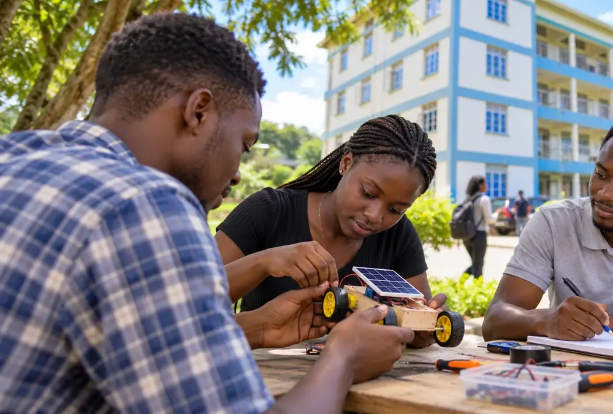
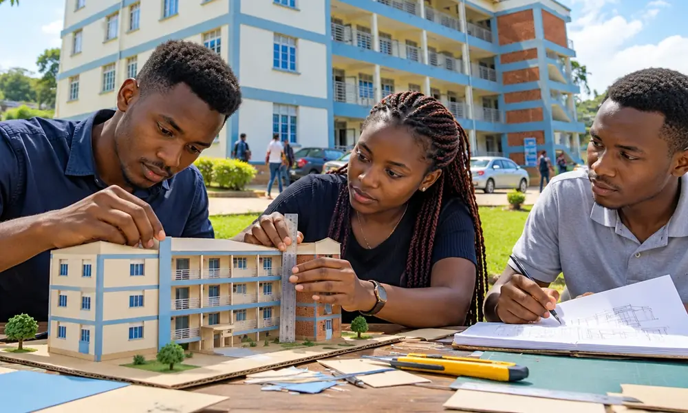
Illustrations with fictional people, set against the UCU–Kagando building reference. They are not photographs of pupils, students or the neighbouring primary school.
05The five-year ambition
A mobilisation target for education infrastructure, not money received.
Source proposal: 802 students. Five-year planning projection: 4,000–5,000 students.
The building shown is UCU–Kagando University College. The neighbouring nursery and primary school is a separate priority. See the supplied campus photograph.
06The planned journey
The planned route runs from Kenya into western Uganda and ends at the campus in Kagando, Kasese. Stages are being prepared with partners along the way.
Conceptual line, not a map
Distance and step count are planning estimates subject to route verification.
Bring your community into the journey07Five steps, five friends
Start small · Bring others · Grow together
The circle shows how invitations can spread. It is an illustration, not a forecast of money raised.
08Ways to take part
Businesses, churches, clubs, families and friends can pool support for a larger commitment.
| Level | Commitment | Discuss |
|---|---|---|
| Platinum | UGX 100M + steps | Discuss |
| Gold | UGX 80M + steps | Discuss |
| Diamond | UGX 60M + steps | Discuss |
| Silver | UGX 40M + steps | Discuss |
| Bronze | UGX 20M + steps | Discuss |
Levels shown in the supplied campaign artwork. Partnership terms are agreed with the campaign team.
09Accountability
Your name, steps and reference are recorded through the pledge journey, separately from money received.
Make your pledgeOnly reconciled live payments enter the public received total. Unpublished figures are never shown as zero.
Already contributed directly? Keep your transaction reference and contact the campaign team about verification. Reporting a payment is not confirmation that it was received.
Briefings explain the mission. Confirmed walk dates, stages and cleared field reports are published when available.
11Visual stories
Fifty-six campaign illustrations, from the Walking Rotarian to playful discoveries and university ideas. Every image here is an illustration.
AI-generated campaign artwork and fictional campus-life scenes, guided by the supplied portrait and UCU–Kagando building photograph. They illustrate the mission; they do not document actual pupils, events, completed facilities or verified impact.
Ten illustrated explainers for your community. Sample amounts, dates and status layouts are templates, not live campaign records. Identity artwork is not confirmation of a new partner.
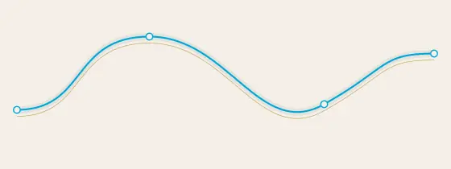
01Continuous step line (explainer, opens in a new tab)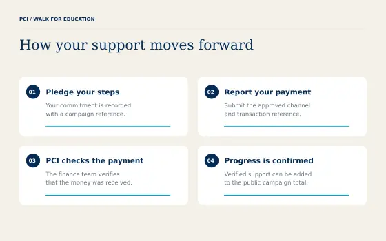
02Participation process (explainer, opens in a new tab)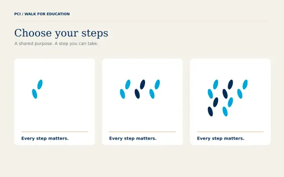
03Step choice illustrations (explainer, opens in a new tab)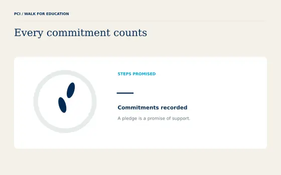
04Steps promised template (explainer, opens in a new tab)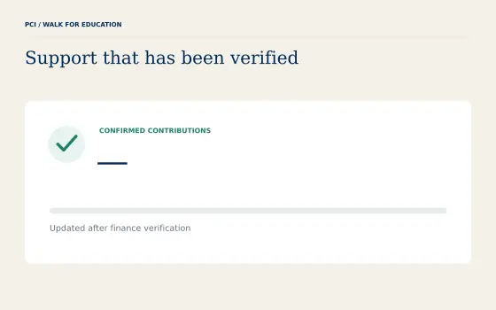
05Confirmed contributions template (explainer, opens in a new tab)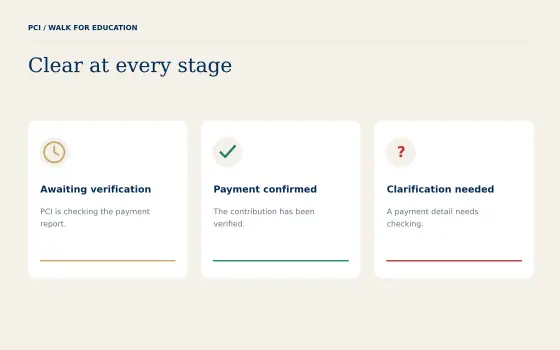
06Payment state family (explainer, opens in a new tab)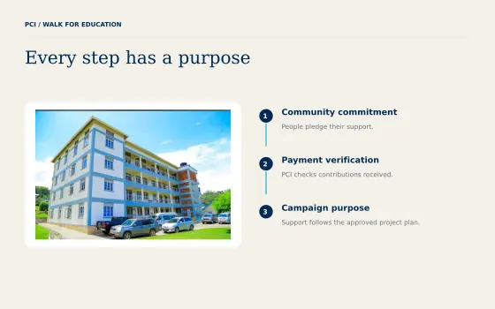
07Project purpose diagram (explainer, opens in a new tab)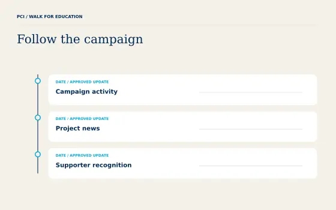
08Campaign update timeline (explainer, opens in a new tab)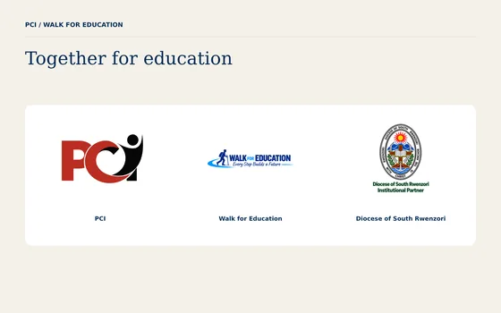
09Official partner identities (explainer, opens in a new tab)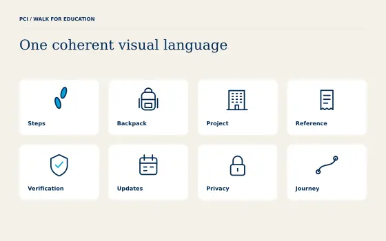
10Campaign utility icons (explainer, opens in a new tab)12Contribute directly
The website records pledges. To contribute directly, use these campaign-approved channels and keep your provider’s transaction reference. Direct transfers are recorded separately by the team.
Before you pay: confirm the account name and payment instructions with PCI campaign finance. Campaign collections may be held by named partner organisations. Questions: pci.uganda@gmail.com. Online card checkout is being prepared.
Account number 1104672 (both are required to pay)
Recipient: Parenting with Purpose
Payment name: Support South Rwenzori Diocese Projects
Confirm the name at payment
Account name: South Rwenzori Development Projects
SWIFT / BIC EQBLUGKAXXX
Account name: South Rwenzori Development Projects
SWIFT / BIC EQBLUGKAXXX
Account name: South Rwenzori Development Projects
SWIFT / BIC EQBLUGKAXXX
Your contribution, recognised
A personalised digital certificate thanks you for supporting education. It becomes available on your payment result page after a verified successful live payment.
With appreciation to
Your name hereFor carrying steps towards an education future.
Pledges, pending payments and test payments do not unlock a certificate.
Before you pledge
Need help with a contribution or a group?
Talk to the campaign team See campaign accountabilityA step is a symbolic contribution unit of UGX 5,000, priced in the currency of the country you choose. It supports the shared education priorities; it does not buy a specific building item or measure a physical kilometre. The minimum is 5 steps, or UGX 25,000.
Yes. Choose your steps and record a pledge on the contribution page. No money is collected. A pledge records your intention to support and is kept separate from received funds.
You get a pledge reference and a prepared WhatsApp message for the campaign team. Send it when you are ready, pay with the approved channel for your country, and include your transaction reference so the team can match it.
After a verified successful live payment, your payment result page unlocks a personalised certificate. Keep that page open in the browser you used to contribute. Pledges, pending payments and test payments do not unlock certificates. Automatic email delivery is not active.
UCU–Kagando University College expansion and the neighbouring Kagando Nursery & Primary School. The five-year UGX 25 billion mobilisation goal covers student hostels, learning spaces and ICT, faculty and staff facilities, the neighbouring school and wider university expansion.
Successful payments receive a receipt after the payment provider verifies the transaction. Public digital received totals include only live payments reconciled by PCI finance. Pledges and in-kind support remain separate. Read the reporting rules.
Yes. Discuss funding, construction support, equipment, expertise or programme investment with the campaign team. Scope, reporting and recognition are agreed in writing. Explore partnership options.
Every step builds a future
One person carries the bag. Choose the part you can carry today.